The primary purpose of this batch program is to calculate a scheduled invoice date for sales orders. The scheduled invoice date will determine on which date the Print Invoices (R42565) program will print the invoice. If the scheduled invoice date is greater than today's date, the Cycle Billing (R49700) program will write deferred journal entries. A cycle billing version of the Print Invoices (R42565) program will be created, so that invoices will be printed only when the scheduled invoice data is less than or equal to the date specified in the processing options. The scheduled invoice date field (SIDT) is stored in the Sales Order Detail Tag (F49211) file and is written at the time the Cycle Billing (R49700) program is run.
Scope
Details
Fundamental Types of Cycles
There are four fundamental types of cycles available in EnterpriseOne.
Daily cycles. The daily cycle with no day’s increment is the default cycle.
Weekly cycles, in which the day of the week invoices are printed can be specified.
Scheduled invoice date cycles, is used to specify the invoice dates by taking the row exit "Sched Inv Date" in the Invoice Calculation form. These cycles include monthly, semi-monthly, and bi-weekly. Note: This cycle type is different than the scheduled invoice date data item (SIDT) which is used by all cycle billing preferences and is found in the F49211.
Based on date cycles, is used to specify a date associated with the sales order (stored in UDC 42/DN). Note: This cycle type is different from the based on date data item (BODN) which can be used by all cycle billing preferences.
Steps Required for Cycle Billing
Cycle billing requires the following setup:
Order activity rules. Cycle billing is typically run at a status just prior to printing invoices.
AAIs for deferred journal entries.
Invoice Cycle Preference Master (P40315, accessed from P40070 on menu G4231): establish the preference hierarchy, and then create cycles assigned to the combinations of customers, customer groups, items, or items groups which are allowed by the hierarchy.
Invoice Cycle Calculation Rule (P40315, accessed by row exit from within the preference master).
After the setup is completed, three batch applications are run for cycle billing:
Scheduling Invoice Billing (R49700). This UBE is commonly referred to as Cycle Billing.
Print Invoices (R42565): Cycle billing version. To consolidate invoices, use the Invoice Consolidation (ICON) flag in the Customer Billing Instructions.
Sales Update (R42800).
Order Activity Rules
According to the default order activity rules, the Cycle Billing (R49700) program will process orders before the Print Invoices (R42565) program. Set up a cycle billing status in the order activity rules for each relevant order type and line type combination; these typically include stock (S), non-stock (N), direct ship (D) and freight (F). The default cycle billing status is 578. Note that all lines on the order should be set to this status, even if the lines do not have preferences for cycle billing. The Cycle Billing (R49700) program will update the status on all lines, regardless of whether there is preference. A typical next status would be 580, Print Invoices.
For example, for a stock item, the next status after Shipment Confirmation (P4205) will be set to 578.
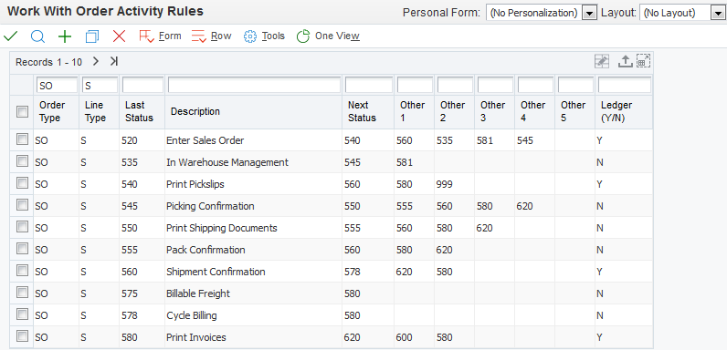
Alternatively, for testing purposes, 578 can be added to the order activity rules as an Other Allowed status after ship confirm. Then, the override status can be set behind the version of P4205, so that the stock lines will have a next status of 578.
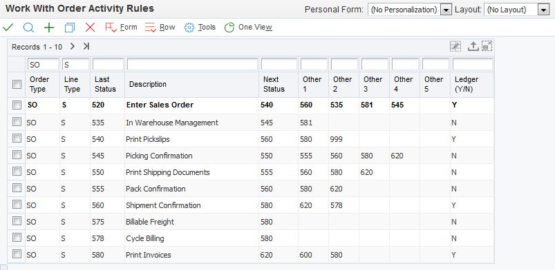
For a non-stock item, typical order activity rules are shown below.
If the alternative order activity rules for non-stock lines are used as shown below, the next status of 578 would be set as the override next status in the processing options at sales order entry.
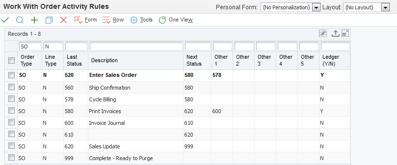
AAIs for Deferred Journal Entries
When the scheduled invoice date is greater than today’s date, deferred entries will be created by the Cycle Billing (R49700) program. These entries are necessary to account for the liabilities that are created when goods or services are sold, but the customer will be billed at a future date. The sales orders will be invoiced and run through Sales Update (R42800) on that future date. The entries booked to Deferred COGS, Deferred Revenue and Unbilled A/R at cycle billing will be reversed by sales update to the appropriate non-deferred accounts, COGS, Revenue and A/R.
Because deferred entries are only created if the scheduled invoice date is greater than today's date, an invoice cycle of Daily (with number of days to increment set to zero) will never create any deferred entries. A Based on date may also not create deferred entries if the based on date (e.g., order date) is less than or equal to today's date and if the number of days to increment is set to zero. However, an invoice cycle of daily type or based on date type can write deferred entries if number of days to increment is greater than zero. It is not possible to turn off writing one of the Deferred/Unbilled AAI entries.
The following AAIs must be setup in order to create deferred entries for stock items:
The inventory AAI (4240) will also be written to when stock lines are processed through the Cycle Billing (R49700) program.
Sample journal entries written by the Cycle Billing (R49700) program, and Sales Update (R42800), will be shown below in the Example: Monthly Scheduled Invoice Date section.
Invoice Cycle Preference
The Invoice Cycle preference is called from P40700 on menu G4231. Invoice Cycle has been assigned a preference type number (PRFR stored in UDC 40/PR) of 15. The naming convention for preference programs is P403XX, where XX is equal to the preference type number, e.g., P40315 for Invoice Cycle. To access the P40315 from within the P40700, select the Invoice Cycle row, and choose from the row exits: Profiles, Hierarchy, or Master Revision.
The purpose of the Invoice Cycle preference is to assign an invoice cycle (INCY stored in UDC 40/CY) based on combinations of customer number, customer group, item number, or item group. The combinations are defined in the preference hierarchy. If all customers will use the same invoice cycle for all items, the hierarchy may be set for all customers/all items. Many different invoice cycles can be added as required; for example, multiple weekly preferences can be set up, such as WK1, WK2, WK3, etc. Choose the "Profiles" row exit to the "Work with . . . ." form. Click find to see existing preference profiles, or click add to create new preference profiles.
The data on invoice cycle preferences are stored in the F40315, Preference Profile – Invoice Cycling Table, and the F49080, Invoice Cycle Calculation Table. If a Scheduled Invoice Date cycle type is used, the data are stored in the F49085, Scheduled Invoice Date Table.
Invoice Cycle Calculation Rule
Once the Invoice Cycle preference is created as described above, select a row and take the row exit to “Calc Rule”. The first field in this form is fiscal year (DTEY), and it must be populated with the two digit year in order to create a calculation rule. Under Date Calculation parameters, the invoice cycle is grayed out; it has been populated based on the row selected when taking the row exit to this form.
Within this Invoice Cycle Calculation Rule form, there is a data item which is also called Calculation Rule. The Calculation Rule data item (CLCD, stored in UDC 42/CR) determines which of the other setup fields must be populated. Then, the combination of values within the calculation rule will determine the scheduled invoice date. The matrix below shows the valid field combinations for each of the four fundamental cycle types. Then, the required fields are described in detail.
The following table details which fields are required to contain a value, which are optional, and which fields must be blank for each Calculation Rule. Note that in some cases, fields that should be blank can still be populated; if the fields should be blank, the entered values will be ignored.
Calculation Rule (CLCD)
Number of Days Increment (NODI)
Day of Week (DOW)
Based on Date (BODN)
Schedule Invoice Dates (IVD in Form Exit)
Daily = 1
Optional
Blank
Required to be equal to Zero (Does not use based in date)
Ignored
Weekly = 2
Ignored
Required
Required to be other than Zero
Ignored
Scheduled Invoice Dates
Bi-weekly = 3 Semi-monthly = 4 Monthly = 5
Ignored
Blank
Required to be other than Zero
Required
Based-on-date = 6
Optional
Blank
Required to be other than Zero
Ignored
Number of Days Increment (NODI) is the number of days added to the Based on Date. This field can be specified for the daily and based-on-date calculation rule types.
Based On Date Name (BODN) field values are stored in UDC table 42/DN that indicates the date name that will be used in the calculation. The valid values are:
0) Does not use based on date 1) Order/Transaction (TRDJ) 2) Requested Delivery (DRQJ) 3) Promised Delivery (PDDJ) 4) Load Confirm (LDDT) 5) Delivery Confirm (DCDT) 6) Actual Ship (ADDJ) 7) Promised Delivery (PDDJ) 8) Promised Ship (PPDJ)
Day of Week (DOW) field is a UDC table (42/DW) that indicates on which day of the week the Print Invoice program will produce an invoice for the customer; this field is used for weekly cycles only.
Scheduled Invoice Date (IVD) If using a calculation rule with a Scheduled Invoice Date type, i.e., other than daily, weekly, or based-on-date, the scheduled invoice date (IVD) must be manually assigned. This setup is found by taking the form exit Scheduled Inv Dates from the Invoice Cycle Calculation Rule form. This table requires entry of the effective from (EFTJ) and effective thru (EXDJ) dates, and corresponding invoice date (IVD). Because a specific invoice date is assigned, the number of day’s increment is ignored for these preferences.
The invoice cycle calculation rule setup can be tested by entering dates in the Test Date fields at the bottom left of the form. The scheduled invoice date will appear in the corresponding Calc Date box. See the example below at Setup Example: Monthly.
The invoice cycle calculation rules are stored in the Invoice Cycle Calculation (F49080) table. If using a calculation rule with a scheduled invoice date type, the scheduled invoice dates are stored in the Scheduled Invoice Date (F49085) table.
Cycle Billing (R49700)
Cycle Billing (R49700) is located on the G42113 menu. There are two versions of the Cycle Billing (R49700) program, Proof and Final. Oracle recommends that a proof version is run and reviewed before running the final version.
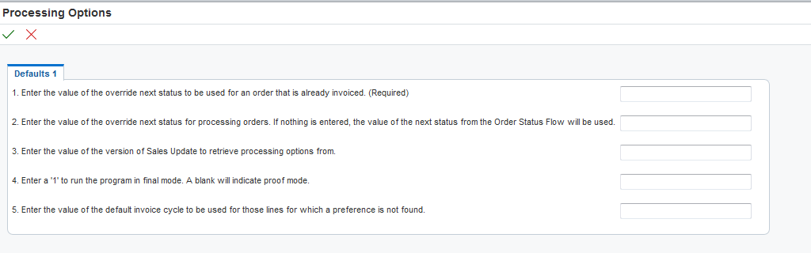
The Cycle Billing (R49700) program writes to the F49211 (Sales Order Detail Tag File). The Deferred Entries Flag (DEFF), Invoice Cycle (INCY) and Scheduled Invoice Date (SIDT) are populated in the F49211. If the DEFF flag is populated with a ‘1’ in the F49211, a corresponding deferred entries flag, SO12*, will have a value of ‘1’ written to the F4211 file. This flag is used for data selection in the Print Invoices (R42565) program.
Processing Options
The first processing option requires that the user enters a valid next status for orders that have already been invoiced. The purpose of this option is to divert orders that have already been invoiced from calculating a scheduled invoice date. If orders are picked up for processing that already have an invoice number in the F4211, they will not be assigned a scheduled invoice date, but they will be assigned a next status as specified in this processing option, e.g., 620. The next status must be a valid status in the order activity rules.
The second processing option allows the user to enter an override next status for orders that are processed through cycle billing. Otherwise the next status will be assigned based on the order activity rules. Typically, the next status would allow the order to be run through the Print Invoice program, e.g., 580. This status must be a valid status in the order activity rules.
The third processing option allows entry of a version of Sales Update (R42800) that will also be used to run sales update over these orders. The purpose of this processing option is to use the same processing options for the creation of the cycle billing journal entries and the sales update journal entries. Because sales update will reverse any journal entries created during cycle billing, these processing options should be consistent.
The fourth processing option indicates if this version is a Proof version or a Final version. Journal entries will only be written if run in Final mode. Running in proof mode first will allow users to review G/L entries and make corrections if needed.
The fifth processing option allows the entry of an invoice cycle. This invoice cycle can act as the default if no invoice cycle preference is found. Typically, this option will be set to Daily and use the Invoice Cycle Preference to calculate the scheduled invoice date for any customer that requires an invoice cycle other than Daily. However, any other invoice cycle (which is stored in UDC 40/CY and which has been assigned a Calculation Rule, stored in the F49080) can be entered in this processing option as an override for all orders which will be run through this batch. The orders processed through this batch are based on: 1) the data selection of the version of the Cycle Billing (R49700) program, and 2) the preference hierarchy. If the invoice cycle is stored in the 40/CY, but no calculation rule has been established for it, this value will populate the INCY field in the F49211, but the DEFF and the SIDT will not be populated, and no deferred entries will be written.
There is no call to R40400 to turn on the Invoice Cycle Calculation preference as there are with most other preferences. The R40400 is hard coded to always call this preference.
Data Selection
The data selection is based on Sales Order Header (F4201) and Sales Order Detail (F4211) fields.
Results
After running the UBE, a report prints that contains any deferred G/L entries written for each order. If no entries are necessary, i.e., if the scheduled invoice date (SIDT) is less than or equal to today's date (or system date for testing purposes), only a header line for each order selected will print. If the header of the report prints with no sales order headers or details, then the batch had errors. Errors for the batch, e.g., AAI errors, will appear in the work center. When AAI errors occur for any sales order detail line, cycle billing will not create deferred entries for any lines on the sales order.
For sales orders with deferred entries, the Deferred Entries Flag (DEFF) will be populated with a ‘Y’, and the Invoice Cycle field (INCY) and Scheduled Invoice Date field (SIDT) will also be populated. When testing cycle billing preferences: check that the SIDT (the scheduled invoice date) and INCY (invoice cycle) in the F49211 were populated as expected based on the calculation rule.
The order status in the F4211 will be updated to indicate the next step in the order flow. The next status will typically indicate that the order is ready for invoice print, e.g., 580.
If the Cycle Billing (R49700) program was run in final mode, a G-batch will be created. This deferred journal entries can be viewed with the batch number found on the UBE output.
Note: Some businesses may print invoices one time per week (weekly), Fridays for instance. In this case, the client would define the Invoice Cycle Preference, and specify this cycle in the processing options behind the Cycle Billing (R49700) program. However, if the client wants to assign different cycles to different customers or customer groups, then the Invoice Cycle Preference must be assigned to customers/customer groups and items/items groups.
Print Invoices (R42565)
XJDE0009 is the default version of Print Invoices for Cycle Billing. On the Print tab, the first processing option can store a date value. Any orders with scheduled invoice date (SIDT) less than or equal to this date will be processed, i.e., the statuses will be updated, and invoice numbers assigned. Orders with future dates will not yet be processed. If no date is entered in this processing option, the system date will be used.
The Print Invoices (R42565) program can print consolidated invoices if the Invoice Consolidation flag (ICON) is activated in the Customer Billing Instructions.
The invoice date in the processing option can be set to a future date, if there is an exception and an invoice needs to be printed before the scheduled invoice date. For example, if the SIDT is 05/04/10, and today's date is 05/01/10, the processing option can be changed to 05/04/10, to print the invoice today. However, the invoice will print with an invoice date of 05/04/10, and the invoice date (IVD field in the F4211) will be populated with 05/04/10.
Sales Update (R42800)
Sales update should be run with the same processing options as the version that was attached to the Cycle Billing (R49700) program. Sales update will reverse the deferred journal entries (i.e., written by AAIs 4221, 4231, and 4232) that were written by the Cycle Billing (R49700) program. If there was no preference for the line, no deferred entries will be written by the Cycle Billing (R49700) program, so no reversals will occur at sales update. An example of sales update can be found below in Setup Example: Monthly.
Purge of Sales Order Detail Tag (F49211) file
F49211 will be purged to the F49219 history table, if F4211 records are purged to the F42119 at sales update.
Setup Examples
The following sections detail examples of the different types of invoice cycles. Several of the examples include various screen prints of the setup and the output from the Cycle Billing (R49700), Print Invoices (R42565), and Sales Update (R42800) UBEs, as well as the resulting changes to the records in the tables. The hierarchy used for all examples includes sold to address/ item number, sold to address/all items, and all items/all customers.
Setup Example: Monthly
In the following example, a monthly preference will be used for a sold to address/item number.
Assume that today is February 23rd. The number of days increment field (NODI) is ignored with scheduled invoice date preferences. The day of the week field (DOW) must be blank. The based-on-date must be populated with a value other than zero, or a receive error (0860) will occur. In this example, the customer will be invoiced based on actual ship date (ADDJ). Enter in FY = 10 to move to the next screen.
Because monthly preferences are of type Scheduled Invoice Date, Scheduled Invoice Dates must be specified through the row exit "Sched Inv Date". Any invoice date can be specified; for this example, if a customer has ordered stock items that shipped between February 1st and February 26th, the invoice date will be 2/26/18.
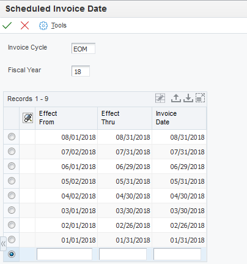
Use the Test Date fields at the bottom of the following form to validate the invoice dates. This will only validate the dates are accurate and will not hold the test data once exiting.
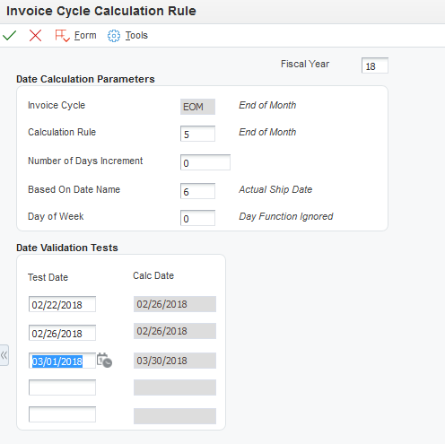
All possible dates for each fiscal year should have an associated invoice date. In the example below, if the actual ship date is September 18th, no invoice date will be assigned because there is no invoice date specified for this preference.
Order Example: Monthly
1. Enter a sales order for the customer (sold to) and item number for a stock line type item.
2. Ship Confirm P4205 the order, ensuring that the next status for confirmed lines is 578. In this example, one line of the order has an actual ship date (ADDJ) of February 26th, and the other line has an actual ship date of March 5th.
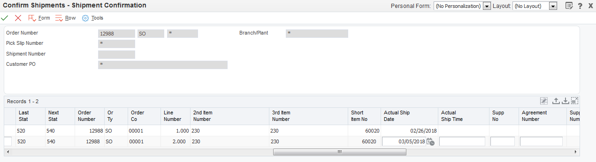
Set up the Cycle Billing (R49700) program and its attached version of the Sales Update (R42800). Here are the processing options of both UBEs.
Sales Update (R42800) program:
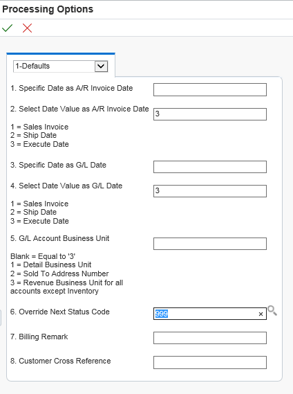
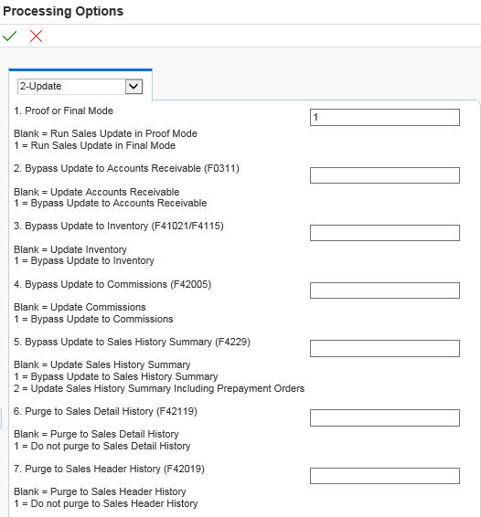
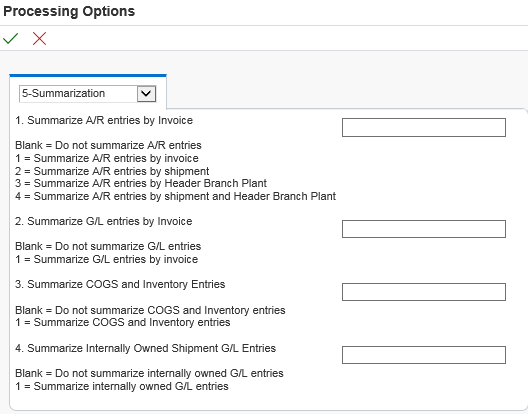
Cycle Billing (R49700) program:
The data selection for the Cycle Billing (R49700) program will include the next status equal to 578. Run the Cycle Billing (R49700) program over the order. Below is the .pdf output from the Cycle Billing (R49700) program. Note that both lines created deferred journal entries.
Below, the UTB is shown for the F49211 and F4211. When testing, ensure that the DEFF (Deferred Entries Flag) has a ‘1’ to signify that deferred entries have been written. SIDT will show the scheduled invoice date calculated by the preference, and INCY will show the invoice cycle used.
In the F4211, note that the SO12 is ‘1’, showing that deferred entries were written. Also, note that the statuses have been updated and are now ready for invoice print. The SIDT, INCY and SO12 show the lines processed. If they are not populated, the order did not process correctly.
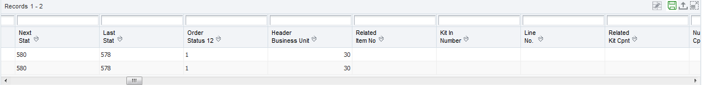
When the Print Invoices (R42565) program is run tonight, this sales order will not be processed because the SIDTs for the lines on the order are February 26th and March 5th. Run the Print Invoices (R42565) program on February 26th. Below is the .pdf output for the UBE. Only the first line was printed and assigned an invoice number.
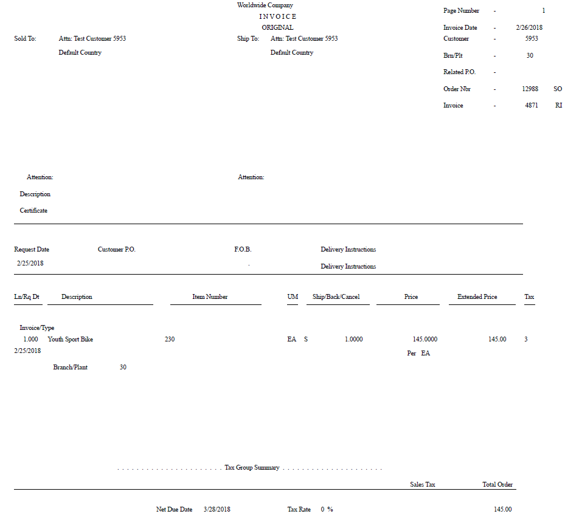
Since the system date is February 26th, the first line of the order will be processed through sales update. Run sales update, and the .pdf output will show the reversed deferred journal entries and the final journal entries:
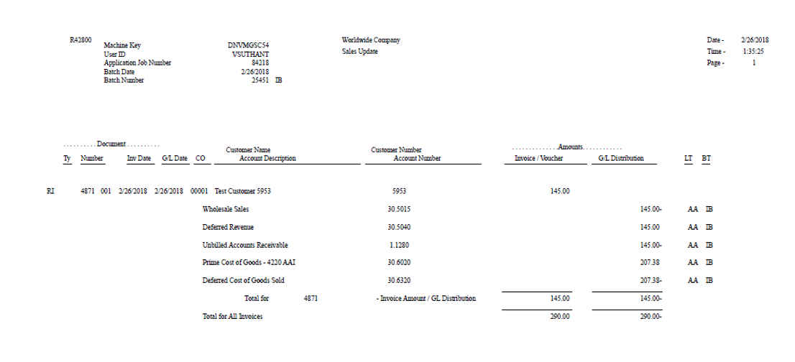
Since we have purged the F4211 for lines run through sales update, only one line remains in the F4211 for this order. This line will not be invoiced and updated until August 30th.
Setup: Weekly Example
The example below demonstrates the setup for a weekly invoice cycle. For this example, assume:
A weekly scheduled invoice date, for instance each Monday;
February 23rd is a Friday; and
Consolidated invoices are printed using Print Invoices (R42565), because this customer has the Invoice Consolidation flag on in the Customer Billing Instructions.
The calculation will be based on the order date (TRDJ).
The first step is to setup the Invoice Cycle preference. In this example, customer will be assigned an invoice cycle of WK1 when the Cycle Billing (R49700) program is run. For example, cycle billing will calculate a scheduled invoice date of February 26th (Monday) for all orders for customer entered on the 20th through the 26th. Therefore, when the Print Invoices (R42565) program is run on the 20th, no invoices will print for customer. On Monday, February 26th, when the Print Invoices (R42565) program is run, all orders entered since the previous Monday will print for customer. In the above example we are defining the invoice cycle for a weekly invoice cycle. With this rule we will invoice once per week, on Mondays.
Order Example: Consolidated Invoices/Weekly
Set up the customer with Invoice Consolidation activated in the Customer Billing Instructions.
Enter three orders with order dates February 24th, 25th and 26th. The orders would typically be run through ship confirm to change the next status on each line to 578, and then the Cycle Billing (R49700) program would be run daily. For testing purposes, we can run all the orders through Cycle Billing (R49700) program in one batch.
Here is the Cycle Billing (R49700) program .pdf output: 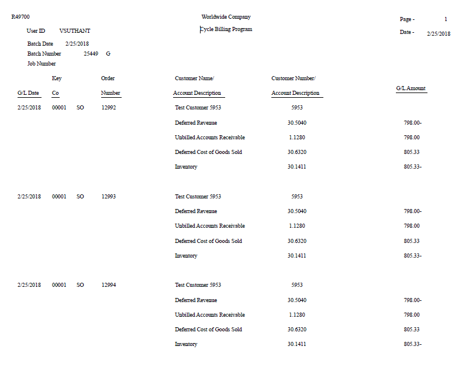
Run the Print Invoices (R42565) program on February 26th, and one invoice number will be assigned, as this customer allows invoice consolidation. The consolidated invoice will print for all of the items, as shown below:
Setup Example: Based on Date
The example below demonstrates the setup for all customers for all items. This calculation may be set up by a business which invoices based on the promised shipment date (PPDJ) + 5 days increment. For example, cycle billing will calculate a scheduled invoice date of March 3rd for all orders entered which have promised shipment dates of February 26th. When the Print Invoices (R42565) program is run on the February 26th, no invoices will print for these orders. The calculation rule will look like this example:
Setup Example: Daily
The daily preference (with no days to increment) will be used as a default if: 1) the system does not find a match in the specified hierarchy, and 2) there is no other override preference specified in the processing option behind the Cycle Billing (R49700) program. In other words, the invoice and sales update will run the same day that the order is entered, which is the same result as if no preferences were used.
Frequently Asked Questions
Question 1: For certain dates, no deferred journal entries are created, why?
Answer 1: One possible cause is that all possible dates for each fiscal year do not have an associated invoice date. In the example shown below, if the actual ship date is September 18th, no invoice date will be assigned because there is no invoice date specified for that date in this preference.
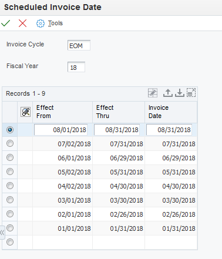
Also, check that the F49080 and F49085, as well as the preference hierarchy, are populated as expected.
Question 2: If the wrong scheduled invoice date (SIDT) is assigned to a detail line, can the user overwrite the value of the SIDT in the F49211 with a correct value?
Answer 2: Although this is not the intended functionality of the Cycle Billing (R49700) program, the statuses on the detail line can be set back manually, so that the Cycle Billing (R49700) program can be rerun over the line to correct the scheduled invoice date. The original deferred entries batch must be voided manually.
Question 3: Where can cycle billing not be used?
Answer 3: Cycle billing cannot be used in the follow scenarios:
Cycle billing cannot be used for interbranch orders (e.g., SK/OK), although it can be used for the customer order (e.g., SI).
Deferred entries will not be created for advanced pricing type 6 adjustments, since these adjustments do not create new lines in the F4211 or F49211.
Cycle billing does not use workday calendar.
Orders with prepayments will not create deferred journal entries.
Question 4: When using R49700 Cycle Billing report with intercompany and flex accounting set on the R42800 Sales Update version, why does the system look at the Detail B/P instead of the Header B/P for the Inventory DMAAI 4240?
Answer 4: When processing Cycle Billing for Interbranch & Intercompany orders, a separate version of Sales Update (R42800) needs to be created for use by the Cycle Billing itself. This version needs to have the order type of the Interbranch/Intercompany order that is being processed by Cycle Billing in the Interbranch Order Types PO of R42800. Typically, this is the SI order type.
The version of R42800 which is to be run at the end of the Sales processing cycle still needs to be setup with the Interbranch Order Types PO as a value of SK.
When processing Cycle Billing in this way, the correct entries are made using the Header B/P.
Question 5: Can Flexible Sales Accounting Be Used With Cycle Billing (R49700)?
Answer 5: Yes. Make sure to setup R49700 using the Rule Setup Method in the Enabled Functionality by Application in menu G1631. Make sure AAIs for flex accounting have been setup and accounts are created with the appropriate values on the fields being flexed. The version of R42800 called by R49700 Cycle Billing must have the Flex Accounting Processing Option set to 1.
Question 6: When attempting to test R49700 Cycle Billing the job it ends in error that states Fiscal Year Not Set Up. When looking at jdedebug.log the EditDate function is not passing in a date.
Answer 6: R42800 Processing Options were set = 1 to use the Sales Invoice Date as the AR Date and GL Date for Cycle Billing deferred entries. The sales invoice date was null on the sales order because invoice print has not been run. The Fiscal Year was not set up for the blank or null sales invoice date passed in from the sales order.
R49700 calls a version of R42800 to create deferred Journal Entries. In this version of R42800, the AR Date and GL Date must be set to 2 (Actual Ship Date) or 3 (Execute Date) in order for GL deferred entries to get created. If processing options are set to use actual ship date, verify the order has been ship confirmed and the actual ship date is populated.
Question 7: Why does version R42565. ZJDE0009 (or a copy of this version) end in error “Retrieve of UBE Failed” when attempting to View PDF from Work With Submitted Jobs?
Answer 7: It is normal to receive this error message, and no PDF output, when running the R42565. ZJDE0009 over an order (that has had the R49700 run over it and where the SIDT date has been assigned) in cases where the current date is less than the SIDT value. For example, if the SIDT date is 8/21, and the R42565 is being run on 8/16, the R42565 will fail. The R42565 will complete correctly on 8/21 or any date after this.
Question 8: We ran cycle billing to create deferred revenue entries and subsequently cancelled the sales order lines. How can we correct the journal entries?
Answer 8: Deferred revenue entries are created in batch type G transactions. The journal entry can be voided using the Journal Entry application, P0911. Inquire on the journal entry. Select the record then take the Row exit to Void. A confirmation screen will appear indicating "Are you sure that you want to void this journal entry? The G/L date field is enabled to allow the user to indicate a date in the current accounting period.